Cyfrowe serce Hubu. Opisujesz problem, dostajesz sprawdzoną innowację. Masz pomysł, dostajesz pomoc w drodze do grantu. AI działa lokalnie, a decyzje zostają po stronie ludzi.
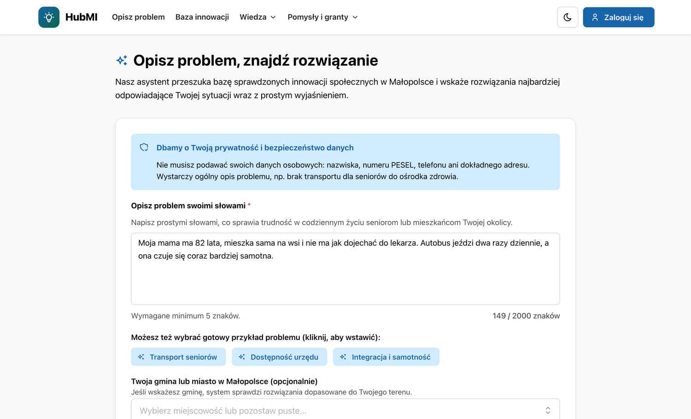
Obligatoryjny. Opis problemu własnymi słowami, dopasowane innowacje z uzasadnieniem.
36 innowacji, 10 wyzwań Małopolski i 15 materiałów edukacyjnych.
Fiszka, wniosek wg wzoru ROPS i Asystent AI.
Zgłoszenia do testów, oceny 1–5 i uwagi.
Wątki z ROPS i ekspertami, powiadomienia.
Moderacja, treści, trendy potrzeb i luki w bibliotece.
Plan wdrożenia innowacji dla konkretnej instytucji.
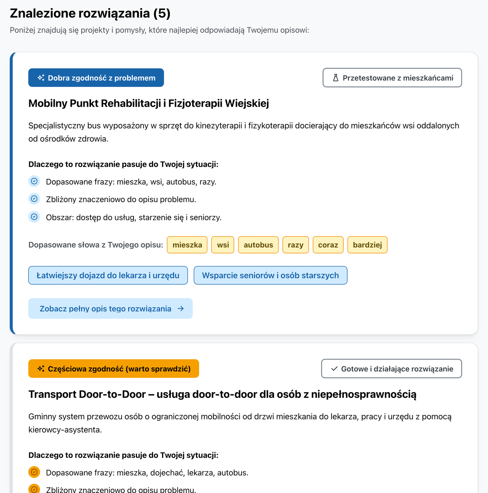
Prywatność od pierwszego znaku. PESEL, telefon i e-mail są wycinane, zanim tekst trafi do bazy lub modelu.
Szukanie hybrydowe. Słowa kluczowe po polsku (BM25) plus znaczenie zdania (embeddingi bge-m3), liczone lokalnie.
Uczciwy wynik. Uzasadnienie i dopasowane frazy przy każdej innowacji. Gdy nic nie pasuje, mówimy to wprost i prowadzimy do zgłoszenia pomysłu.
48 zapytań (potoczne, urzędowe, seniorów) i 11 bez dobrej odpowiedzi, na 36 innowacjach. MRR 0,79 → 0,95; poprawne „brak dopasowania” 82% → 91%. Zestaw pisał zespół, więc wynik potwierdzimy na danych ROPS.
Odporność: awaria modelu nie wyłącza modułu, wyszukiwanie wraca do słów kluczowych w ok. 10–40 ms. Zapytania bez dopasowania trafiają do admina jako luki w bibliotece.
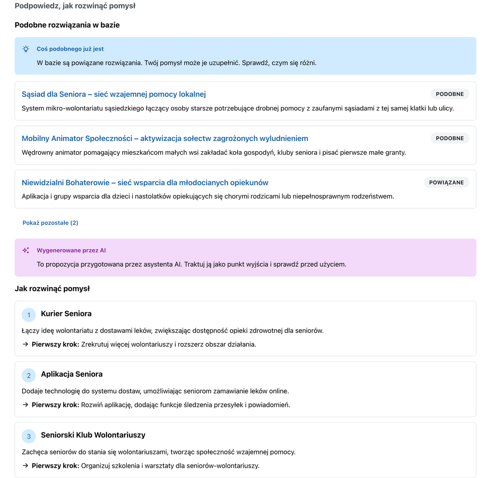
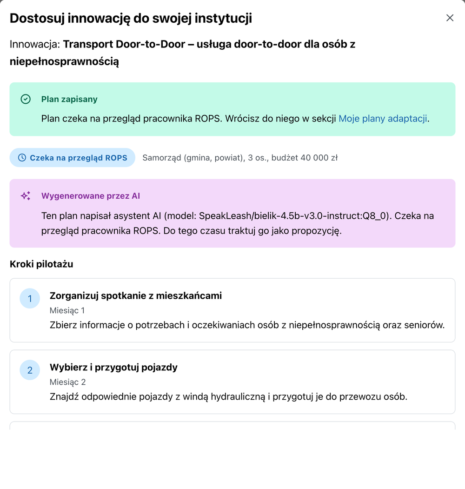
Asystent kreatora sprawdza, czy pomysł już istnieje, podpowiada kierunki rozwoju i ryzyka, rozpisuje przepływ krok po kroku. Middleman układa plan pilotażu: forma usługi, kroki z miesiącem startu, zasoby, ryzyka i koszt porównany z budżetem instytucji. Pierwszy krok po ok. 6 s, cały plan po 15–18 s.
Modele działają na serwerze ROPS (Ollama: Bielik 4,5B i bge-m3). Żadne dane nie trafiają do zewnętrznych usług AI.
„Podobne innowacje” i wskaźnik nowości liczy wyszukiwarka, nie model, więc nie da się ich zmyślić.
Odpowiedź modelu jest sprawdzana (długości, spójność kroków, budżet). Błędne części są odrzucane.
Plan trafia do kolejki ROPS: zatwierdź albo odrzuć z komentarzem. Wszystko oznaczone „Wygenerowane przez AI”.
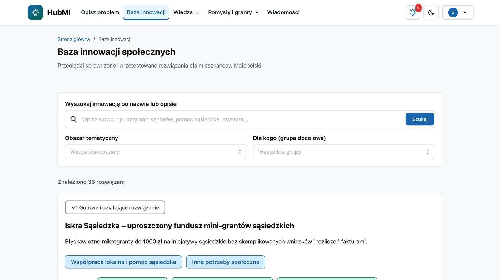
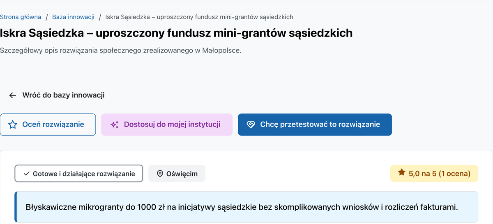
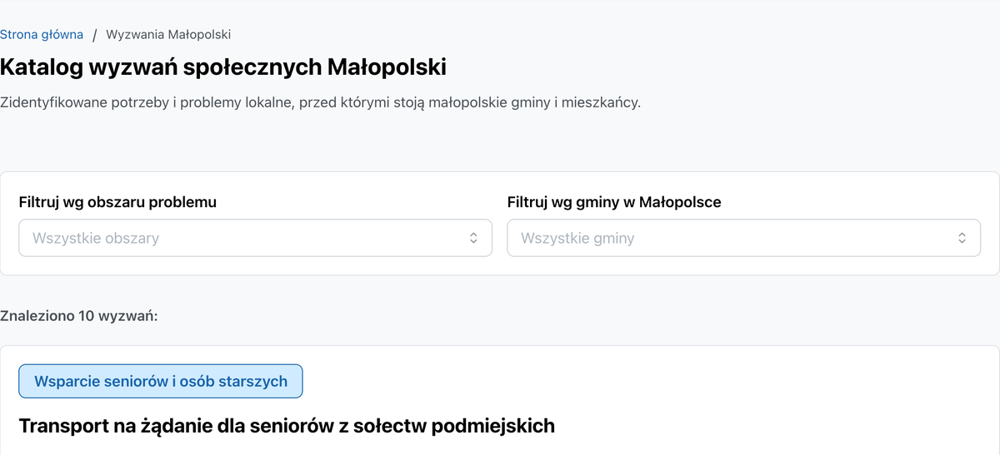
Zgłoś chęć testowania, oceń rozwiązanie (1–5) i dodaj uwagi. ROPS widzi kolejkę zgłoszeń do akceptacji i opinie testerów.
Katalog działa jak sklep z gotowymi rozwiązaniami: filtr obszaru i grupy, karta wg wzoru ROPS, a z niej przycisk „Dostosuj do mojej instytucji” (Middleman).
Zmiany w bibliotece robi się w panelu, bez programisty. Wideo wymaga napisów lub transkrypcji, więc treści pozostają dostępne.
Cztery proste kroki: istota pomysłu, adresaci, etap realizacji. Obok linki do canv innowacji społecznych i Asystent AI.
Linki do canv innowacji (Model Canvas, Arkusz Diagnozy Potrzeb, Plan Skalowania) są w kreatorze fiszki i wniosku. Asystent AI sprawdza, czy pomysł już istnieje, i podpowiada, jak go rozwinąć.
Nowa jakość: zamiast PDF-a do wypełnienia, formularz, który prowadzi, waliduje i podpowiada. Nabory mają statusy: otwarty, wkrótce, zamknięty.
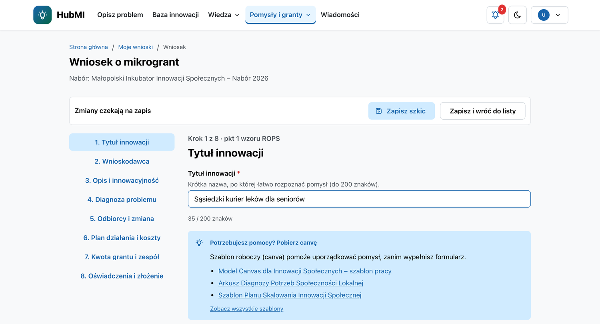
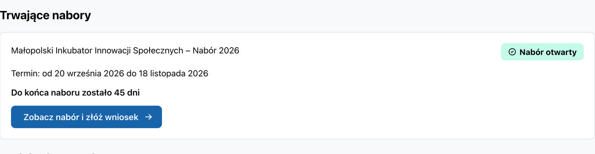
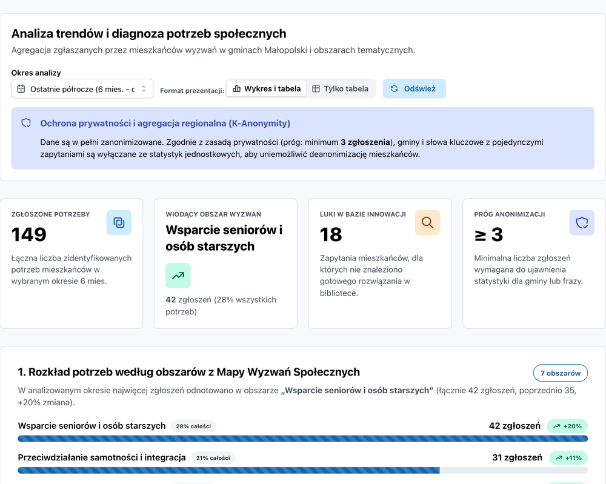
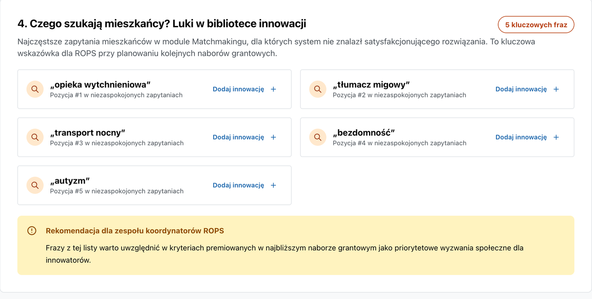
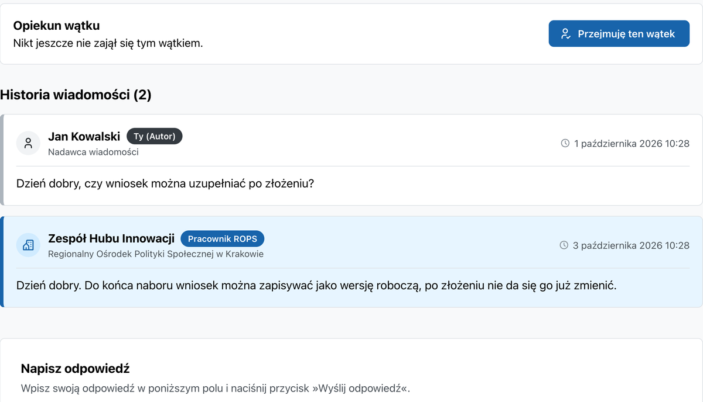
Autor zgłasza pomysł lub pytanie
Admin i ekspert widzą powiadomienie
Kolejka „Wymaga uwagi”, przejęcie wątku
Odpowiedź z szablonu, status z komentarzem
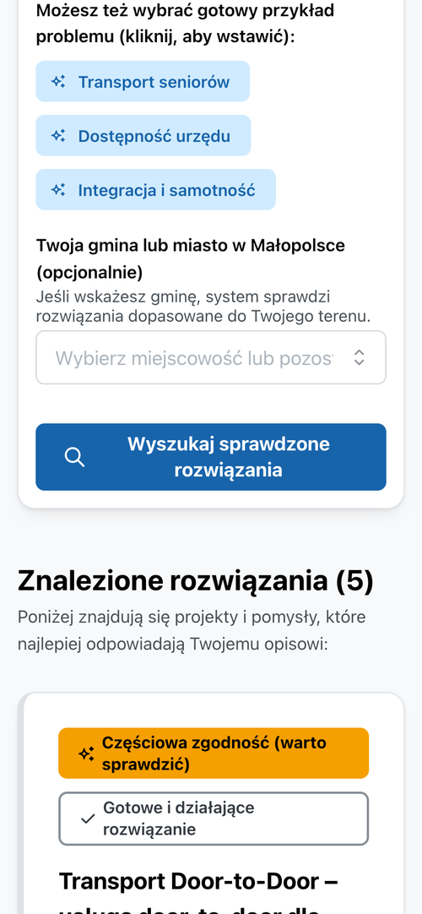
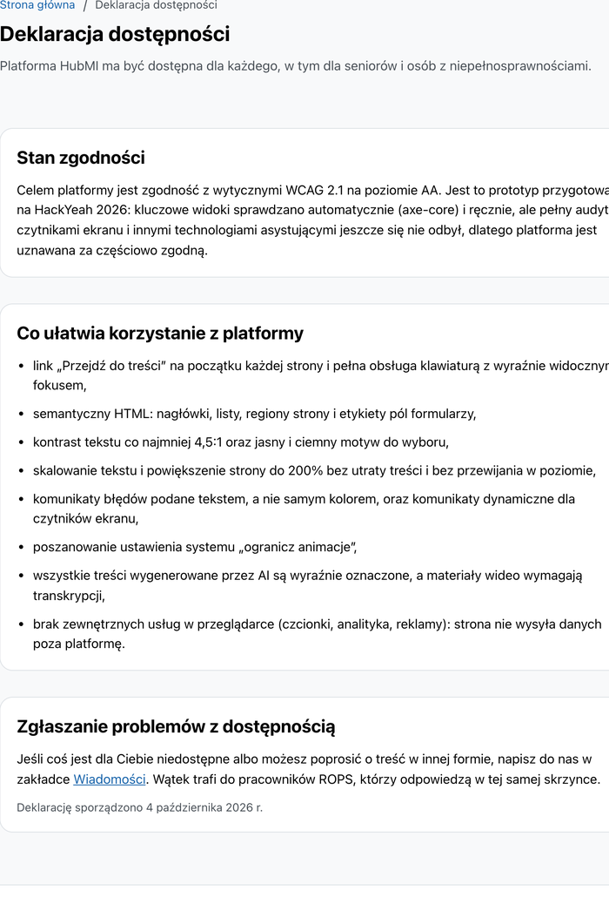
0 naruszeń na 15 widokach, w motywie jasnym i ciemnym: start, wyniki (też na telefonie), baza, wyzwania, materiały, deklaracja, kreator, asystent, nabory, skrzynka, wątek, panel admina, trendy, panel eksperta. Audyt wykrył niedostateczny kontrast linków, plakietek i trendów, więc go poprawiliśmy.
Do tego ESLint z jsx-a11y i testy vitest-axe. Następny krok: test z osobami 55+, czytniki ekranu i formalna deklaracja. Dziś deklarujemy zgodność częściową.
Prawdziwy DOM (dostępność), klient API z Kotlin/JS
Moduły domenowe: innowacje, matching, pomysły, nabory, komunikacja, asystent, panel
dokument na agregat
OIDC; role user, expert, admin
bge-m3, Bielik 4,5B
Ta sama aplikacja na atrapie API w Kotlinie, publikowana na GitHub Pages. Trzy konta demo (użytkownik, ekspert, administrator) przełączane w menu. Zmiany zapisują się w przeglądarce. AI w demo to szablony; prawdziwy model działa w wersji z serwerem.
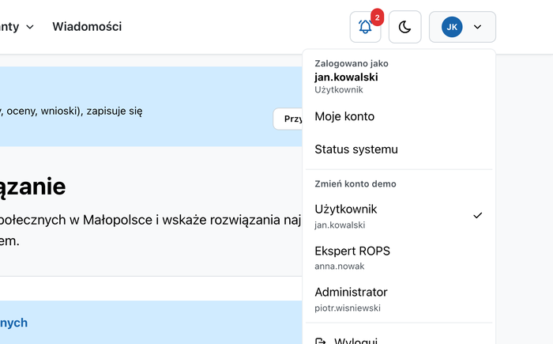
Szczyt kampanii (200 tys. wizyt miesięcznie) to ok. 56 żądań/s (założenie), więc jedna instancja wystarcza. Wąskim gardłem jest GPU dla AI, a nie ruch; dopasowanie działa bez modelu językowego.
Jeden kontrakt REST współdzielony z klientem i API powiadomień ze strumieniem SSE. Baza grantowa i inne systemy Hubu mogą korzystać z tego samego API.
Keycloak i role, czyszczenie danych osobowych, brak danych w logach, k-anonimowość trendów, dane i AI na infrastrukturze ROPS.
270 testów serwera i kontraktu oraz 163 testy frontu, CI z ktlint i budowaniem demo, błędy jako wartości (Arrow).
Najpierw instancja na region (ten sam obraz), potem wspólny krajowy katalog innowacji i regionalne dane osobowe. Wzór wniosku do wymiany na konfigurację.
| Wariant | Zasoby | Koszt (wynajem w UE) |
|---|---|---|
| Pilotaż (minimum) | 1 VM: 4 vCPU, 16 GB RAM, 200 GB SSD + maszyna AI z GPU 16–24 GB VRAM | ok. 240 € / mies. (ok. 12 tys. zł / rok) |
| Bez GPU | j.w., Ollama na CPU, tylko wyszukiwanie (bez generowania planów) | ok. 40–80 € / mies. |
| Region (HA, SLA ok. 99,5%) | 2× serwer, 2× Keycloak, Mongo na 3 węzłach, Postgres z repliką, 1 GPU | do wyceny; własna serwerownia: wg infrastruktury ROPS |
Administrator IT 0,1–0,2 etatu. Redaktor i kurator treści 0,25–0,5 etatu. Rozwój kodu wg potrzeb (nowe wzory naborów).
Audyt bezpieczeństwa, audyt WCAG z deklaracją dostępności, migracja treści i szkolenie redaktorów.
Ceny orientacyjne, bez VAT (październik 2026); liczby ruchu to założenia do weryfikacji testem obciążeniowym. Przed produkcją: rate limiting, Keycloak w trybie produkcyjnym, Mongo z uwierzytelnianiem.
W demo: menu konta (prawy górny róg) przełącza użytkownika, eksperta i administratora. Ekrany na slajdach pochodzą z prototypu.